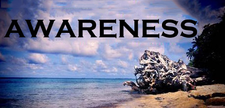
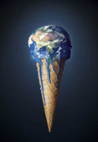

Why is our climate important?
CLIMATE STABILITY
Carbon dioxide, methane and other greenhouse gases occur naturally,
trapping heat in the atmosphere and keeping Earth’s climate stable.
But human activities over the last few centuries have released greenhouse gases
at levels that are destabilizing the climate — far too quickly for human institutions,
and the species they rely on, to keep up. In 2013, CO2 concentrations in the atmosphere hit
400 parts per million — the highest they’ve been in 3 million years.
Causes
- The burning of fossil fuels is the #1 source of human-caused greenhouse gas emissions. If emissions continue to rise, we’ll be locked in to devastating rises in temperature. Moving toward a more diversified, cleaner energy portfolio and scaling up energy efficiency lessen our dependence on fossil fuels — and are critical steps toward reducing our emissions.
- Massive amounts of carbon are locked away in tropical forests. When we destroy these forests to clear land for ranches or farms, that carbon gets released into the atmosphere and accelerates climate change. The effects are felt globally: Studies have found that deforestation accounts for 11% of all human-caused greenhouse gas emissions, and land use change is responsible for an additional 5%.
Effects
- More extreme weather events (increased rate and intensity) due to warming of oceans and other large water surfaces causing more water vapor in the air
- Melting of sea ice which diminishes the albedo affect (sunlight being reflected back due to white color of ice) while at the same time the now exposed sea water traps more heat and expands causing sea levels to rise
- Disruption of natural habitat causing extinction of animals and flora because they simply cannot adapt to new environment in such a short period of time (ie, polar bears need sea ice to hunt for seals while seals need the same to breed. When the amount of sea ice shelves decreases both species will be affected).
- From big cities to small communities, 50% of the global population live near the coast. But this way of life is deeply imperiled by rising seas, coastal erosion and storms that are intensified by climate change. Habitat destruction and land use changes are degrading and destroying natural buffers — wetlands and coastal forests — that help protect against storm surges and rising sea levels
